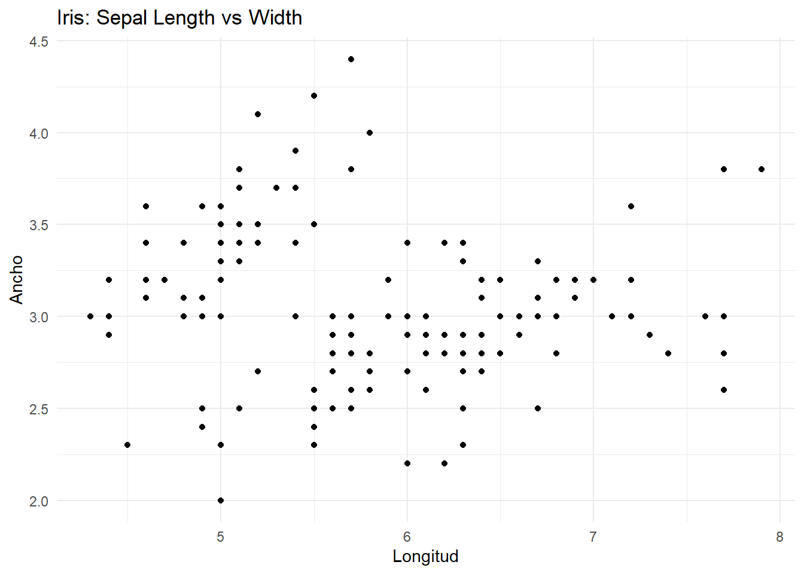
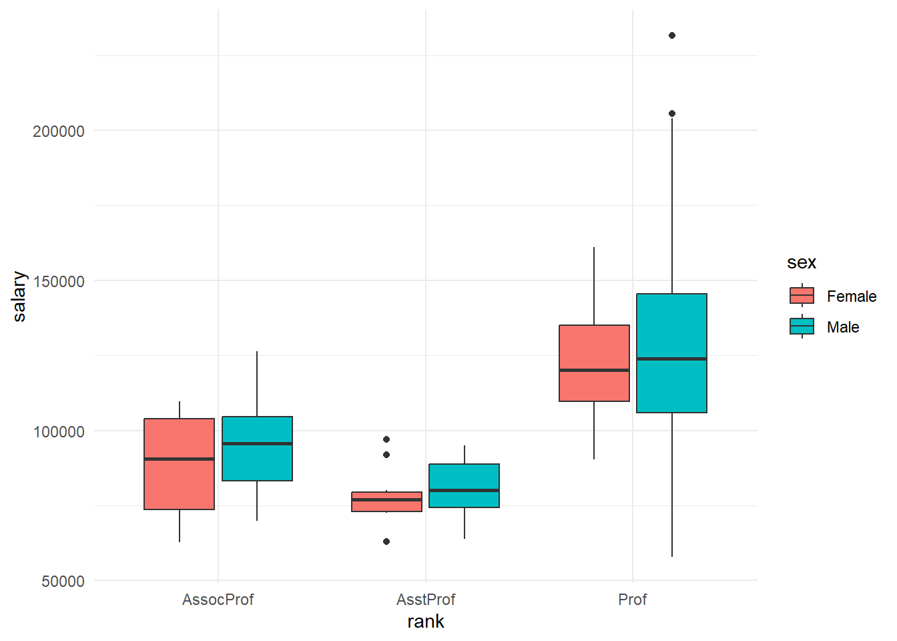

Code
set.seed(123)
# Paquetes utilizados en la clase
# Si falta alguno, descomenta e instala:
# install.packages(c("tidyverse", "readxl", "plotly", "modeest"))
library(tidyverse)
library(readxl)
library(plotly)
library(modeest)Objetos, indexación, data frames, lectura de datos, dplyr y gráficos
Orlando Joaqui-Barandica
August 11, 2025
Propósito. Este documento es material de clase en vivo (no diapositivas). Incluye explicación, código ejecutable y actividades cortas.
Sugerencia de uso: Abrir como proyecto (.Rproj), guardar los datos en la carpeta Datos/, y renderizar con Quarto: quarto preview (o botón Render en RStudio/Posit).
::: callout-important Rápido repaso de buenas prácticas
<- sobre = para objetos._ (snake_case): base_sal.Datos/Salaries.xlsx.3.14 (no coma). :::La consola de R permite cálculos directos:
Las funciones tienen la forma nombre(argumentos). Ej.: mean(x).
[1] 1 2 3 4 5[1] 38[1] 23 24 25::: callout-note Tip: La indexación en R comienza en 1 (no en 0). :::
iris)[1] 3.5 [1] setosa setosa setosa setosa setosa setosa
[7] setosa setosa setosa setosa setosa setosa
[13] setosa setosa setosa setosa setosa setosa
[19] setosa setosa setosa setosa setosa setosa
[25] setosa setosa setosa setosa setosa setosa
[31] setosa setosa setosa setosa setosa setosa
[37] setosa setosa setosa setosa setosa setosa
[43] setosa setosa setosa setosa setosa setosa
[49] setosa setosa versicolor versicolor versicolor versicolor
[55] versicolor versicolor versicolor versicolor versicolor versicolor
[61] versicolor versicolor versicolor versicolor versicolor versicolor
[67] versicolor versicolor versicolor versicolor versicolor versicolor
[73] versicolor versicolor versicolor versicolor versicolor versicolor
[79] versicolor versicolor versicolor versicolor versicolor versicolor
[85] versicolor versicolor versicolor versicolor versicolor versicolor
[91] versicolor versicolor versicolor versicolor versicolor versicolor
[97] versicolor versicolor versicolor versicolor virginica virginica
[103] virginica virginica virginica virginica virginica virginica
[109] virginica virginica virginica virginica virginica virginica
[115] virginica virginica virginica virginica virginica virginica
[121] virginica virginica virginica virginica virginica virginica
[127] virginica virginica virginica virginica virginica virginica
[133] virginica virginica virginica virginica virginica virginica
[139] virginica virginica virginica virginica virginica virginica
[145] virginica virginica virginica virginica virginica virginica
Levels: setosa versicolor virginica[1] "Sepal.Length" "Sepal.Width" "Petal.Length" "Petal.Width" "Species" [1] setosa setosa setosa setosa setosa setosa
[7] setosa setosa setosa setosa setosa setosa
[13] setosa setosa setosa setosa setosa setosa
[19] setosa setosa setosa setosa setosa setosa
[25] setosa setosa setosa setosa setosa setosa
[31] setosa setosa setosa setosa setosa setosa
[37] setosa setosa setosa setosa setosa setosa
[43] setosa setosa setosa setosa setosa setosa
[49] setosa setosa versicolor versicolor versicolor versicolor
[55] versicolor versicolor versicolor versicolor versicolor versicolor
[61] versicolor versicolor versicolor versicolor versicolor versicolor
[67] versicolor versicolor versicolor versicolor versicolor versicolor
[73] versicolor versicolor versicolor versicolor versicolor versicolor
[79] versicolor versicolor versicolor versicolor versicolor versicolor
[85] versicolor versicolor versicolor versicolor versicolor versicolor
[91] versicolor versicolor versicolor versicolor versicolor versicolor
[97] versicolor versicolor versicolor versicolor virginica virginica
[103] virginica virginica virginica virginica virginica virginica
[109] virginica virginica virginica virginica virginica virginica
[115] virginica virginica virginica virginica virginica virginica
[121] virginica virginica virginica virginica virginica virginica
[127] virginica virginica virginica virginica virginica virginica
[133] virginica virginica virginica virginica virginica virginica
[139] virginica virginica virginica virginica virginica virginica
[145] virginica virginica virginica virginica virginica virginica
Levels: setosa versicolor virginica::: callout-warning Cuidado: iris[, 5] devuelve un vector; iris[5] o iris["Species"] devuelven un data frame (clase diferente). Si necesitas preservar data frame, usa drop = FALSE o la sintaxis de dplyr::select(). :::
Las listas permiten mezclar tipos de objetos.
Asegúrate de que el archivo exista en la ruta relativa Datos/Salaries.xlsx.
Rows: 397
Columns: 6
$ rank <chr> "Prof", "Prof", "AsstProf", "Prof", "Prof", "AssocProf",…
$ discipline <chr> "B", "B", "B", "B", "B", "B", "B", "B", "B", "B", "B", "…
$ yrs.since.phd <dbl> 19.5, 20.0, 4.0, 45.0, 40.0, 6.0, 30.0, 45.0, 21.0, 18.0…
$ yrs.service <dbl> 18, 16, 3, 39, 41, 6, 23, 45, 20, 18, 8, 2, 1, 0, 18, 3,…
$ sex <chr> "Male", "Male", "Male", "Male", "Male", "Male", "Male", …
$ salary <dbl> 139750, 173200, 79750, 115000, 141500, 97000, 175000, 14…[1] "rank" "discipline" "yrs.since.phd" "yrs.service"
[5] "sex" "salary" ::: callout-note Depuración de rutas: Si aparece error de lectura, revisa la carpeta del proyecto y que Datos/ esté al mismo nivel que este .qmd. :::
Trabajaremos con la variable salary:
[1] 107300[1] 92000::: callout-tip Si no quieres usar modeest, puedes calcular la moda con dplyr:
:::
[1] 917425865[1] 30289.04 25% 50% 75%
91000 107300 134185 [1] 26.63792 Min. 1st Qu. Median Mean 3rd Qu. Max.
57800 91000 107300 113706 134185 231545 [1] 57800[1] 231545dplyr: seleccionar, filtrar, transformarmutate (nuevas variables)group_by + summarize# Resumen por sexo
res_sex <- salaries %>%
select(rank, sex, yrs.service, salary) %>%
mutate(SalCOP = salary * 4556.04) %>%
group_by(sex) %>%
summarize(
PromUSD = mean(salary, na.rm = TRUE),
PromCOP = mean(SalCOP, na.rm = TRUE),
sdUSD = sd(salary, na.rm = TRUE),
sdCOP = sd(SalCOP, na.rm = TRUE),
Mediana = median(salary, na.rm = TRUE)
)
res_sex# Resumen por cargo y sexo
base_final <- salaries %>%
select(-discipline) %>%
filter(yrs.service >= 10) %>%
mutate(SalCOP = salary * 4556.04) %>%
group_by(rank, sex) %>%
summarize(
PromUSD = mean(salary, na.rm = TRUE),
PromCOP = mean(SalCOP, na.rm = TRUE),
MedUSD = median(salary, na.rm = TRUE),
MedCOP = median(SalCOP, na.rm = TRUE)
)
base_final::: callout-note dplyr::summarise() y summarize() son equivalentes (inglés británico/americano). :::
Usaremos Datos/CovidMuestra.xlsx.
[1] "Divipola" "Departamento" "Municipio" "Edad" "Sexo"
[6] "Fecha" Objetivo. Calcular la edad promedio por departamento y ordenar de mayor a menor.
dplyr::n()).ggplot2::geom_col().ggplot2 y versión interactiva
::: callout-tip Idea didáctica: convierte factores en color/forma: aes(color = Species) y añade geom_smooth() para una tendencia. :::
ingresos con 12 valores simulados y calcula media, mediana, sd y CV.salaries, crea una variable antiguedad_cat (<10, 10–20, >20 años) y resume media/mediana del salario por categoría y sexo.salary por rank y color por sex.[1] 102.9083[1] 101.5[1] 13.8875[1] 13.49502
R version 4.2.0 (2022-04-22 ucrt)
Platform: x86_64-w64-mingw32/x64 (64-bit)
Running under: Windows 10 x64 (build 26100)
Matrix products: default
locale:
[1] LC_COLLATE=Spanish_Colombia.utf8 LC_CTYPE=Spanish_Colombia.utf8
[3] LC_MONETARY=Spanish_Colombia.utf8 LC_NUMERIC=C
[5] LC_TIME=Spanish_Colombia.utf8
attached base packages:
[1] stats graphics grDevices utils datasets methods base
other attached packages:
[1] modeest_2.4.0 plotly_4.10.4 readxl_1.4.3 lubridate_1.9.2
[5] forcats_1.0.0 stringr_1.5.1 dplyr_1.1.0 purrr_1.0.1
[9] readr_2.1.4 tidyr_1.3.0 tibble_3.2.1 ggplot2_3.5.1
[13] tidyverse_2.0.0
loaded via a namespace (and not attached):
[1] tidyselect_1.2.1 xfun_0.42 colorspace_2.1-0
[4] vctrs_0.6.5 generics_0.1.3 htmltools_0.5.7
[7] viridisLite_0.4.2 yaml_2.3.8 rmutil_1.1.9
[10] rlang_1.1.3 stable_1.1.6 pillar_1.10.2
[13] glue_1.7.0 withr_3.0.2 lifecycle_1.0.4
[16] timeDate_3043.102 munsell_0.5.0 fBasics_3042.89.1
[19] gtable_0.3.4 cellranger_1.1.0 timeSeries_3062.100
[22] htmlwidgets_1.5.4 statip_0.2.3 evaluate_0.23
[25] labeling_0.4.3 knitr_1.45 tzdb_0.3.0
[28] fastmap_1.1.0 crosstalk_1.2.0 scales_1.3.0
[31] jsonlite_1.8.8 farver_2.1.1 hms_1.1.3
[34] digest_0.6.34 stringi_1.8.3 grid_4.2.0
[37] clue_0.3-61 stabledist_0.7-1 cli_3.6.2
[40] tools_4.2.0 magrittr_2.0.3 lazyeval_0.2.2
[43] cluster_2.1.3 spatial_7.3-15 pkgconfig_2.0.3
[46] data.table_1.17.0 timechange_0.2.0 rmarkdown_2.25
[49] httr_1.4.5 rstudioapi_0.15.0 rpart_4.1.16
[52] R6_2.6.1 compiler_4.2.0 ::: callout-tip Atajo útil: Ctrl + L limpia la consola. :::
---
title: "Clase 02 – Limpieza y Transformación de Datos"
subtitle: "Objetos, indexación, data frames, lectura de datos, dplyr y gráficos"
author: "Orlando Joaqui-Barandica"
date: last-modified
format:
html:
toc: true
number-sections: true
code-fold: show
df-print: paged
code-tools: true
theme: cosmo
execute:
echo: true
warning: false
message: false
freeze: auto
editor: visual
---
> **Propósito.** Este documento es material de clase en vivo (no diapositivas). Incluye explicación, código ejecutable y actividades cortas.
::: callout-tip
**Sugerencia de uso:** Abrir como proyecto (`.Rproj`), guardar los datos en la carpeta `Datos/`, y renderizar con **Quarto**: `quarto preview` (o botón **Render** en RStudio/Posit).
:::
## Setup
```{r}
#| label: setup
#| include: true
set.seed(123)
# Paquetes utilizados en la clase
# Si falta alguno, descomenta e instala:
# install.packages(c("tidyverse", "readxl", "plotly", "modeest"))
library(tidyverse)
library(readxl)
library(plotly)
library(modeest)
```
::: callout-important **Rápido repaso de buenas prácticas**
- Prefiere el operador de asignación `<-` sobre `=` para objetos.
- Nombres de objetos en minúsculas y con `_` (snake_case): `base_sal`.
- Trabaja con **proyectos** y rutas relativas: `Datos/Salaries.xlsx`.
- Los **decimales en R usan punto**: `3.14` (no coma). :::
## 1. Consola, operadores y funciones
La consola de R permite cálculos directos:
```{r}
3 + 4
```
Las **funciones** tienen la forma `nombre(argumentos)`. Ej.: `mean(x)`.
## 2. Objetos y vectores
```{r}
# Asignación y vectores numéricos
x <- c(1, 5, 8, 3, 7)
# Podemos redefinirlos
x <- c(1, 5, 8, 3, 7, 7, 77, 7, 7, 7)
X <- 5 # Distinto a x (R es sensible a mayúsculas/minúsculas)
# Secuencias
y <- 1:5
y
```
### 2.1 Indexación de vectores
```{r}
# Índices con corchetes []
y <- 23:67
y[16] # elemento 16
# Rango de índices
y[1:3] # primeros tres
```
::: callout-note **Tip:** La indexación en R comienza en **1** (no en 0). :::
## 3. Data frames (ej. `iris`)
```{r}
# Dataset de ejemplo incluido en R
iris
# Ver en visor (solo en IDE tipo RStudio)
# View(iris)
# Accesos por fila/columna
iris[1, 2] # fila 1, columna 2
iris[, 5] # solo columna 5 como vector
iris["Species"] # data frame con la columna 'Species'
names(iris) # nombres de columnas
iris$Species # acceso con operador $
```
::: callout-warning **Cuidado:** `iris[, 5]` devuelve un **vector**; `iris[5]` o `iris["Species"]` devuelven un **data frame** (clase diferente). Si necesitas preservar data frame, usa `drop = FALSE` o la sintaxis de `dplyr::select()`. :::
### 3.1 Extraer columnas a objetos
```{r}
# Fila 1 completa
y <- iris[1, ]
# Columna 1 (Sepal.Length)
Z <- iris[, 1]
Z[1:5]
```
## 4. Listas
Las listas permiten mezclar tipos de objetos.
```{r}
lista <- list(
A = c(1, 2, 3),
B = iris,
C = 3
)
lista[[1]][3] # tercer elemento del vector A
lista$C # elemento nombrado C
```
## 5. Lectura de datos desde Excel
Asegúrate de que el archivo exista en la ruta relativa `Datos/Salaries.xlsx`.
```{r}
salaries <- read_excel("Datos/Salaries.xlsx")
# Vista rápida
glimpse(salaries)
names(salaries)
```
::: callout-note **Depuración de rutas:** Si aparece error de lectura, revisa la carpeta del proyecto y que `Datos/` esté al mismo nivel que este `.qmd`. :::
## 6. Estadísticos descriptivos
Trabajaremos con la variable `salary`:
```{r}
X <- salaries$salary
head(X)
```
### 6.1 Media (promedio) y manejo de NA
```{r}
f <- c(3, 4, 5, 6, NA, 8)
f
mean(f, na.rm = TRUE) # ignora NA
mean(na.omit(f)) # omite NA y calcula
mean(X, na.rm = TRUE)
```
### 6.2 Mediana y moda
```{r}
median(X, na.rm = TRUE)
# Moda: "most frequent value"
mlv(X, method = "mfv")[1]
```
::: callout-tip Si no quieres usar `modeest`, puedes calcular la moda con `dplyr`:
```{r}
#| eval: false
as.numeric(
names(sort(table(X), decreasing = TRUE)[1])
)
```
:::
### 6.3 Dispersión, cuantiles y coeficiente de variación
```{r}
var(X, na.rm = TRUE)
sd(X, na.rm = TRUE)
# Cuantiles (p.ej. mediana y cuartiles)
quantile(X, probs = c(0.25, 0.5, 0.75), na.rm = TRUE)
# Coeficiente de variación (en %)
sd(X, na.rm = TRUE) / mean(X, na.rm = TRUE) * 100
# Resumen general
summary(X)
min(X, na.rm = TRUE); max(X, na.rm = TRUE)
```
## 7. `dplyr`: seleccionar, filtrar, transformar
```{r}
# Seleccionar columnas
base_sal_1 <- select(salaries, rank, sex, salary)
head(base_sal_1)
# Con tuberías (%>%)
base_sal_1 <- salaries %>%
select(rank, sex, salary)
# Filtrar filas
base_sal_2 <- filter(base_sal_1, sex == "Male")
base_pipe <- salaries %>%
select(rank, sex, salary) %>%
filter(sex == "Male")
base_pipe
```
### 7.1 `mutate` (nuevas variables)
```{r}
base_sal_3 <- salaries %>%
select(rank, sex, yrs.service, salary) %>%
filter(sex == "Female" & salary > 100000) %>%
mutate(
SalCOP = salary * 4556.04, # tasa de conversión ejemplo
salary2 = (salary / yrs.service) * 123 - log(salary)
)
head(base_sal_3)
```
### 7.2 `group_by` + `summarize`
```{r}
# Resumen por sexo
res_sex <- salaries %>%
select(rank, sex, yrs.service, salary) %>%
mutate(SalCOP = salary * 4556.04) %>%
group_by(sex) %>%
summarize(
PromUSD = mean(salary, na.rm = TRUE),
PromCOP = mean(SalCOP, na.rm = TRUE),
sdUSD = sd(salary, na.rm = TRUE),
sdCOP = sd(SalCOP, na.rm = TRUE),
Mediana = median(salary, na.rm = TRUE)
)
res_sex
# Resumen por cargo y sexo
base_final <- salaries %>%
select(-discipline) %>%
filter(yrs.service >= 10) %>%
mutate(SalCOP = salary * 4556.04) %>%
group_by(rank, sex) %>%
summarize(
PromUSD = mean(salary, na.rm = TRUE),
PromCOP = mean(SalCOP, na.rm = TRUE),
MedUSD = median(salary, na.rm = TRUE),
MedCOP = median(SalCOP, na.rm = TRUE)
)
base_final
```
::: callout-note `dplyr::summarise()` y `summarize()` son equivalentes (inglés británico/americano). :::
## 8. Actividad guiada -- CovidMuestra
Usaremos `Datos/CovidMuestra.xlsx`.
```{r}
covid <- read_excel("Datos/CovidMuestra.xlsx")
names(covid)
```
**Objetivo.** Calcular la **edad promedio por departamento** y ordenar de mayor a menor.
```{r}
act <- covid %>%
select(Departamento, Edad) %>%
group_by(Departamento) %>%
summarize(PromEdad = mean(Edad, na.rm = TRUE)) %>%
arrange(desc(PromEdad))
act
```
- Agrega el **desvío estándar** y la **mediana** por departamento.
- Filtra solo departamentos con al menos 50 observaciones (`dplyr::n()`).
- Grafica un **top 10** con `ggplot2::geom_col()`.
## 9. Visualización con `ggplot2` y versión interactiva
```{r}
# Dispersión base
grafico1 <- ggplot(iris, aes(x = Sepal.Length, y = Sepal.Width)) +
geom_point() +
theme_minimal() +
labs(x = "Longitud", y = "Ancho", title = "Iris: Sepal Length vs Width")
grafico1
```
```{r}
# Interactivo con plotly
ggplotly(grafico1)
```
::: callout-tip **Idea didáctica:** convierte factores en color/forma: `aes(color = Species)` y añade `geom_smooth()` para una tendencia. :::
## 10. Ejercicios de cierre
1. Crea un vector `ingresos` con 12 valores simulados y calcula media, mediana, sd y CV.
2. A partir de `salaries`, crea una variable `antiguedad_cat` (\<10, 10--20, \>20 años) y resume media/mediana del salario por categoría y sexo.
3. Grafica un **boxplot** de `salary` por `rank` y color por `sex`.
```{r}
# 1
ingresos <- round(rnorm(12, mean = 100, sd = 15), 1)
mean(ingresos); median(ingresos); sd(ingresos); sd(ingresos)/mean(ingresos)*100
# 2
salaries %>%
mutate(antiguedad_cat = case_when(
yrs.service < 10 ~ "<10",
yrs.service <= 20 ~ "10-20",
TRUE ~ ">20"
)) %>%
group_by(antiguedad_cat, sex) %>%
summarize(
media = mean(salary, na.rm = TRUE),
mediana = median(salary, na.rm = TRUE),
n = dplyr::n()
)
# 3
ggplot(salaries, aes(x = rank, y = salary, fill = sex)) +
geom_boxplot() +
theme_minimal()
```
## 11. Apéndice
```{r}
# Información del entorno
sessionInfo()
```
::: callout-tip **Atajo útil:** `Ctrl + L` limpia la consola. :::